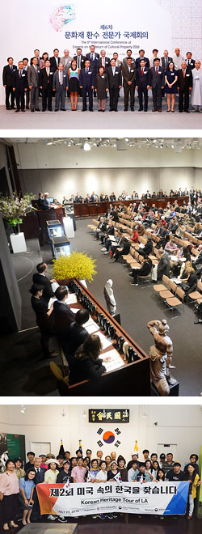
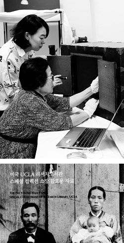

재단소개
-

- 재단소개
- 재단이 걸어온 길
재단이 걸어온길
-
2021
- 2020
- 2019
- 2018
- 2017
- 2016

2021
- 2021.01.16. ‘해외 한국문화재를 만나다’
한국일보 기획연재 진행(∼12.18)
- 2021.04.01. 일본 도쿄대학 한국학연구센터
한국문화재 강의 개설 지원(∼22.3.31.)
- 2021.04.15. 네이버 공연게시판 홍보콘텐츠
연재(~8.11)
- 2021.05.18. 독일 상트 오틸리엔수도원 소장
한국 아카이브(유리건판 등) 실태조사 용역(~11.16.)
- 2021.05.31. 국외문화재 홍보인쇄물 발간(재단
홍보브로슈어, 국외소재문화재 정책자료집)
- 2021.05.31. 국외문화재 이슈페이퍼 3호
발간
- 2021.06.01. 국외소재문화재재단-국립중앙도서관
국제자료교환용 기증자료 전달식
- 2021.06.11. 신미양요 150주년 기념 어재연
수자기 관련 유튜브 영상 공개(재단 유튜브 채널)
- 2021.07.30. 돌아온 국외문화재스탬프투어
프로그램 실시(~10.31.)
- 2021.08.09. 미국 시카고미술관 소장
한국문화재 보존처리 지원을 위한 업무협약(MOU) 체결 및 지원
- 2021.08.11. 국외소재문화재재단 국립항공박물관
<임시정부 비행학교의 역사적 가치와 보존방안> 공동 학술대회 개최(장소:
국립항공박물관)
- 2021.08.13. 제10회 한일 문화재 전문가
세미나 개최(장소: 대한민국 서울)
- 2021.08.23. 국외소재문화재재단·한국박물관협회
<박물관·미술관 종사자 문화재 수집 윤리·실무 교육> 비대면 교육
실시(~8.29.)
- 2021.08.26. 제4회 한일 문화재 연구포럼
개최(비대면 회의)
- 2021.10.04. 미국 럿거스대학 도서관 소장
윌리엄 엘리엇 그리피스 중 한국 서한과 미발간 중요 원고, 전사, 해제의 출간 및 보조
온라인 아카이브 구축 연구 지원을 위한 업무협약 체결
- 2021.11.15. 『미국 클리블랜드미술관 소장
한국문화재』(영문판) 보고서 발간
- 2021.11.16. 『독일 상트 오틸리엔수도원
선교박물관 소장 한국문화재』 영문판 발간
- 2021.11.22. 미국 유타대학교 메리어트 도서관
미국 내 한국문화재 활용 지원을 위한 업무협약(MOU) 체결 및 지원
- 2021.11.31. 국외문화재 이슈페이퍼 4호
발간
- 2021.12.06. 독일 베를린국립박물관
아시아미술관 한국 컬렉션 도록 원고 작성 연구 지원을 위한 업무협약 체결
- 2021.12.21. 워싱턴 주미대한제국공사관 웹
VR 공개 및 체험형 다면영상 상영(장소: 국립고궁박물관
디지털문화유산나눔방)
2020
- 2020.01.10. <나전국화넝쿨무늬합> 국내 반입
- 2020.01.16. <나한도> 국내 반입
- 2020.02.03. 민간단체 국고보조금 지원사업 공고(~2.20.)
- 2020.02.04. 독일 상트 오틸리엔수도원 선교박물관 소장 <혼례용 단령> 1건 1점 기증
- 2020.02.22. ‘한미외교 역사탐방로’ 행사 개최(장소: 미국 워싱턴 D.C.)
- 2020.04. 제26회 국외문화재협의회 개최(서면)
- 2020.04.01. 일본 도쿄대학 한국학연구센터 한국문화재 강의 개설 지원(∼21.3.31.)
- 2020.04.01. 국외소재문화재 2020년도 현황통계 발표(21개국 610개처 193,136점)
- 2020.04.17. 일본 교토대학 소장 한국고문헌 실태조사연구 용역(~11.16.)
- 2020.05.07. 제9회 한일 문화재 전문가 세미나 개최(비대면 회의)
- 2020.06.05. 국외문화재 이슈페이퍼 1호 발간
- 2020.07.21. <송광사 치성광여래도> 국내 반입
- 2020.08.24. <앙부일구> 국내 반입
- 2020.09. 제3회 한일 문화재 연구포럼 개최(비대면 회의)
- 2020.10.28. 함부르크대학 컨소시엄 연구 지원을 위한 업무협약(MOU) 체결 및 지원
- 2020.10.28. 국외소재문화재재단·국립중앙박물관 <박물관·미술관 종사자 대상 문화재 수집 윤리·실무 교육> 공동개최 약정서 체결
- 2020.11.03. 재단-한국교회사연구소 간 국외소재문화재 조사자료 공유 관련 업무협약(MOU) 체결
- 2020.11.04. 재단-베를린자유대학 동아시아미술사학과 간 독일 소재 한국문화재
현황조사 연구 지원을 위한 업무협약(MOU) 체결 및 지원
- 2020.11.06. 재단-일본 데즈카야마대학 부속박물관 간 보고서 제작 및 활용 관련
업무협약(MOU) 체결
- 2020.11.06. <호렵도 팔폭병풍> 국내 반입
- 2020.11.13. 미국 샌프란시스코아시아미술관 소장 한국문화재 활용을 위한 업무협약(MOU) 체결
- 2020.11.13. <박물관·미술관 종사자 대상 문화재 수집 윤리·실무 교육> 비대면 교육 실시 (11.13-11.19.)
- 2020.11.16. 『미국 클리블랜드미술관 소장 한국문화재』 국문판 발간
- 2020.11.16. 『일본 데즈카야마대학 부속박물관 소장 한국문화재』 국·일문판 발간
- 2020.11.16. 『일본 와세다대학도서관 소장 한국전적』 국·일문판 발간
- 2020.11.16. ‘국외소재문화재 BI 개발’ 완료(8.7.~11.16.)
- 2020.11.20. 국외문화재 이슈페이퍼 2호 발간
- 2020.11.25. 미국 스토니브룩대학교 찰스 B. 왕 센터 미국 내 한국문화재 활용을 위한 업무협약(MOU) 체결
- 2020.11.25. 미국 데이턴미술관 소장 한국문화재 보존처리를 위한 업무협약(MOU) 체결
- 2020.11.25. 제27회 국외문화재협의회 개최(서면)
- 2020.11.25. 2020년도 민간단체 역량강화 워크숍 개최(서면)
- 2020.11.26. 러시아 모스크바크렘린박물관 소장 한국문화재 보존처리를 위한 업무협약(MOU) 체결
- 2020.11.27. 제2회 국외소재 한국문화재 보존·복원 온라인 국제 심포지엄 개최(∼12.25. / 재단 유튜브)
- 2020.12.03. 제2회 국외소재 한국문화재 보존·복원 국제 심포지엄 자료집 발간
- 2020.12.04. 국외문화재 보존·복원 특별공개전 ‘<해학반도도>, 다시 날아오른 학’(~2021.2.10. / 장소:국립고궁박물관)
- 2020.12.10. 미국 동부(워싱턴DC) 및 서부(LA) 지역 답사 지도 제작(국·영문 각 1종)
2019
- 2019.02.01. 민간단체 국고보조금 지원사업 공고(~2.21.)
- 2019.03.04. <1950년대 미군 촬영 기록사진> 279점 기증
- 2019.03.08. 3.1운동 100주년 기념 행사 개최(공동주최: 주미대한제국공사관, 존스 홉킨스 대학교국제관계대학원)
- 2019.03.13. 재단-국립현대미술관 간 국외소재 한국 근현대 미술품 및 아카이브 사업의 협력을 위한 업무협약 체결
- 2019.03.22. 재단-독일 그래펠핑시 간 국외소재문화재 콘텐츠 관련 업무협약 체결
- 2019.03.22. 독일 로텐바움세계문화예술박물관 <조선시대 문인석> 국내 반입
- 2019.03.22. <신흥사 제반문(諸般文) 경판> 국내 반입
- 2018.03.27. 제24회 국외문화재협의회 개최
- 2019.04.07. <척암선생문집(拓菴先生文集) 책판> 국내 반입
- 2019.04.08. 도쿄대학 대학원 종합문화연구과 글로벌지역연구기구 한국학연구센터 한국문화재 강의 개설 지원
- 2019.04.13. 제1회 주미대한제국공사관 방문기 시상식 개최
- 2019.04.13. 제3회 해외전문가 대상 한국문화재 보존·복원 교육 워크숍 개최(4.14, 4.21. / 장소: 일본 오사카)
- 2019.05.03. 『주미대한제국공사관 복원 보고서』 발간
- 2019.05.05. 독일 개인 소장 한국 근대작품 <능행도 인쇄본>, <산수도>, <기명절지도> 등 3건 22점 국내 반입
- 2019.05.10. 주미대한제국공사관 ‘복원과정’ 사진전 개최(~5.22. / 장소: 주워싱턴한국문화원)
- 2019.05.10. 영국 빅토리아앨버트박물관 소장 한국문화재 보존복원을 위한 업무협약 체결
- 2019.05.28. 이미륵 기념동판 제막식 독일 현지 개최(장소: 독일 그래펠핑시)
- 2019.06.07. <백자이동궁명(履洞宮銘)사각호> 국내 반입
- 2019.06.10. 미국 데이튼미술관 소장 한국문화재 보존복원을 위한 업무협약 체결
- 2019.06.12. <중화궁인(重華宮印)> 국내 반입
- 2019.06.21. 독일 뮌스터칠기박물관 소장 한국문화재 보존복원을 위한 업무협약 체결
- 2019.06.23. 프랑스 소재 한국문화재 2차 실태조사(~7.21.)
- 2019.06.24. 재단-일본 도쿄예술대학 간 국외소재 한국문화재 현황조사 관련 업무협약 체결
- 2019.06.28. 제7회 한일 문화재 전문가 세미나 개최(일본 도쿄)
- 2019.06.30. 일본 와세다대학도서관 소장 한국 전적 2차 실태조사(~7.5.)
- 2019.07.01. 일본민예관 소장 한국문화재 보존복원을 위한 업무협약(MOU) 체결
- 2019.07.01. 재단-프랑스 국립기메동양박물관 간 실태조사 및 출판에 관한 업무협약(MOU) 체결
- 2019.07.04. 재단 프랑스 체르누스키박물관 간 실태조사에 관한 업무협약(MOU) 체결
- 2019.07.08. 미국 샌프란시스코아시아미술관 소장 한국문화재 활용 지원을 위한 업무협약 체결
- 2019.07.27. ‘제2회 미국 속의 한국을 찾습니다’ 탐방 행사 개최(장소: 미국 LA)
- 2019.07.31. 『국외 우리 문화재 이야기』 발간
- 2019.08.09. 독일 그라시민족학박물관 소장 한국문화재 보존복원을 위한 업무협약 체결
- 2019.08.14. 주미대한제국공사관 ‘역사자료 특별전’ 개최(장소: 주미대한제국공사관)
- 2019.08.29. 독일 상트 오틸리엔수도원 선교박물관 한국실 활용 지원을 위한 업무협약 체결
- 2019.09.02. <박정양(朴定陽) 친필 편지> 2점 국내 반입
- 2019.09.10. 국외문화재 보존·복원 특별공개전 ‘우리 손에서 되살아난 옛 그림’ 개최(~10.13. / 장소: 국립고궁박물관)
- 2019.09.24. 2019 문화재 불법거래 방지 전문교육 개최(~9.25. / 장소: 국립고궁박물관 강당)
- 2019.09.27. 제1회 국외소재 한국문화재 보존·복원 국제심포지엄 개최(장소: 국립고궁박물관)
- 2019.10.10. 재단-일본 지바과학대학 위기관리학부 간 일본 내 한국문화재에 대한 인식연구 지원을 위한 업무협약 체결
- 2019.10.23. 덴마크 국립박물관 소장 오이센컬렉션 연구 지원을 위한 업무협약 체결
- 2019.10.30. <범어사 신중도> 국내 반입
- 2019.10.30. 독일 상트 오틸리엔수도원 선교박물관 ‘단령’ 보존처리 전시(~2020.1.27. / 장소: 국립민속박물관)
- 2019.10.31. 『미국공사왕복수록』 해제집 발간
- 2019.10.31. 『자주외교와 한미우호의 상징 주미대한제국공사관』 도록 발간
- 2019.10.31. 『캐나다 로열온타리오박물관 소장 한국문화재』 영문판 발간
- 2019.11.01. 제3대 최응천 이사장 취임
- 2019.11.11. 제4대 김계식 사무총장 취임
- 2019.11.13. 제25회 국외문화재협의회 개최
- 2019.11.13. 2019 국외 소재 문화재 환수를 위한 후원경매(주최: 서울옥션)
- 2019.11.15. 『독일 상트 오틸리엔수도원 선교박물관 소장 한국문화재』 국문판 발간
- 2019.11.23. ‘한미외교 역사탐방로’ 행사 개최(장소: 미국 워싱턴 D.C.)
- 2019.11.29. 제8회 한일 문화재 전문가 세미나 개최(장소: 일본 도쿄)
2018
- 2018.01.20. <효명세자빈 책봉 죽책> 국내 반입
- 2018.01.24. 독일 상트 오틸리엔수도원 선교박물관 소장 <조선시대 갑옷> 국내 반입
- 2018.01.27. 독일 뮌스터슈바르자흐수도원 소장 <양봉요지> 국내 반입(왜관수도원·칠곡군 협업)
- 2018.02.06. 재단-국립민속박물관 간 국외 한국문화재 보존을 위한 업무협약 체결
- 2018.02.08. 민간단체 국고보조금 지원사업 공고(~2.23.)
- 2018.02.22. 스타벅스커피코리아 기부금 전달식
- 2018.03.02. 한국조폐공사 후원약정식
- 2018.03.28. 제22회 국외문화재협의회
- 2018.04.06. 재단-고려대 해외한국학자료센터 간 해외 소재 한국고문헌 조사 결과물 공유를 위한 업무협약 체결
- 2018.04.11. <운문사 칠성도> 국내 반입
- 2018.04.26. 재단-독립기념관 간 국외 독립운동 사료 관련 업무협약 체결
- 2018.04.30. 『미속습유』 발간
- 2018.05.13. <봉은사 시왕도> 국내 반입
- 2018.05.22. 주미대한제국공사관 개관식 개최(장소: 미국 워싱턴 D.C.)
- 2018.05.30. 독일 상트 오틸리엔수도원 선교박물관 소장 <조선시대 갑옷> 기증식 및 언론공개회(국립고궁박물관)
- 2018.05.31. <덕온공주 동제인장> 국내 반입
- 2018.06.03. 故 아라이 신이치 교수 추도 심포지엄 ‘『콜로니얼리즘과 문화재』를 생각하다’ 후원 및 참석
- 2018.06.09. 스위스·프랑스 등 유럽 소재 한국문화재 실태조사(~7.13.)
- 2018.06.24. 일본 고마자와대학 도서관 소장 한국전적 실태조사(~6.30.)
- 2018.06.26. 일본 고려미술관 소장 한국문화재 보존·복원 사업 지원
- 2018.06.27. 일본 도쿄대학 대학원 종합문화연구과 글로벌지역연구기구 한국학연구센터 한국문화재 강의 개설 지원
- 2018.07.03. 제2회 해외전문가 대상 보존·복원교육 워크숍(독일 상트 오틸리엔수도원 선교박물관)(~7.6.)
- 2018.08.19. 일본 와세다대학 도서관 소장 한국전적 실태조사(~8.26.)
- 2018.08.19. 일본 교토대학 도서관 소장 한국전적 실태조사(~8.26.)
- 2018.08.23. 미국 클리블랜드미술관 소장 한국문화재 활용 사업 지원
- 2018.08.27. 재단-(주)서울옥션 간 국외소재 문화재 환수 협력을 위한 양해각서 체결
- 2018.08.28. 독일 함부르크민족학박물관 소장 한국문화재 보존·복원 사업 지원
- 2018.08.31. 『이선제 묘지 귀향이야기』 발간
- 2018.09.06. 미국 필라델피아미술관 소장 한국문화재 보존·복원 사업 지원
- 2018.09.11. 스웨덴 동아시아박물관 소장 한국문화재 보존·복원 사업 지원
- 2018.09.13. 재단-대한민국역사박물관 간 국외 근현대사 관련 업무협약 체결
- 2018.09.21. 독일 상트 오틸리엔수도원 선교박물관 소장 한국문화재 보존·복원 사업 지원
- 2018.09.26. 미국 럿거스대학 동아시아 언어문화학과 연구 지원
- 2018.10.21. 재단-도쿄대학 공동 심포지엄 ‘<한일공동선언 20주년> 문화재로 이어가는 한일의 미래’ 개최(장소: 일본 도쿄)
- 2018.10.30. 『캐나다 로열온타리오박물관 소장 한국문화재』 국문판 발간
- 2018.10.31. 일본 교토대학대학원 문학연구과 연구 지원
- 2018.10.31. 『일본민예관 소장 한국문화재Ⅱ: 도자·회화편』 일문판 발간
- 2018.10.31. 『일본 세이카도문고 소장 한국전적』 국·일문판 발간
- 2018.10.31. 『일본 도쿄대학 소장 오구라문고 한국전적』 국문판 발간
- 2018.11.01. 2018 문화재 불법거래 방지 전문교육 개최(~11.2.)
- 2018.11.05. ‘미국 속의 한국을 찾습니다’ 행사 개최(~11.11. / 장소: 미국 LA )
- 2018.11.11. <덕온공주 집안 한글자료> 68점 국내 반입
- 2018.11.12. <독립운동가 송일성 자료> 3점 국내 반입
- 2018.11.15. 2018 국외소재 문화재 환수를 위한 후원경매 실시(주최: 서울옥션)
- 2018.11.15. 제23회 국외문화재협의회 개최(~11.16. / 장소: 국립광주박물관, 송광사)
2017
- 2017.02.12. 일본 교토 개인소장 조선철 사전조사(제직, 성분분석)
- 2017.02.15. 민간단체 국고보조금 지원사업 공고
- 2017.03.29. 제20회 국외문화재협의회 주관
- 2017.04.21. 제3회 한일 문화재 전문가 세미나 개최(일본 도쿄)
- 2017.06.17. 제2회 한반도 유래 문화재를 생각하는 간사이 국제워크숍 후원 및 참석(장소: 일본 교토(京都), 시가(滋賀)현)
- 2017.06.18. 독일 상트 오틸리엔수도원 선교박물관 소장 한국 민속·회화유물 실태조사(~7.8.)
- 2017.06.19. 일본 세이카도문고 소장 한국 전적 실태조사(~6.30.)
- 2017.06.29. 2017 문화재 불법거래 방지 전문교육 시행(~6.30.)
- 2017.07.10. 일본 데즈카야마대학부속박물관 소장 한국문화재 실태조사(~8.25.)
- 2017.07.18. 독일 슈투트가르트 린덴박물관 소장 한국문화재 실태조사(~8.6.)
- 2017.08.22. <분청사기상감 ‘경태5년명(景泰5年銘)’ 이선제 묘지> 기증식 및 국내 반입(장소: 일본 도쿄)
- 2017.09.04. 독일 함부르크민족학박물관 소장 한국문화재 보존처리 지원
- 2017.09.06. 미국 뉴어크박물관 소장 한국문화재 보존 및 활용사업 지원
- 2017.09.19. 분청사기상감 이선제묘지 기증설명회(장소: 국립중앙박물관)
- 2017.10.20. 제4회 한일 문화재 전문가 세미나 개최(장소: 일본 도쿄)
- 2017.10.31. 『미래세대를 위한 국제사회의 책임 - 제6차 문화재 환수 전문가 국제회의 발표집』 발간
- 2017.11.06. 미국 샌프란시스코미술관 소장 한국문화재 보존 및 활용사업 지원
- 2017.11.06. 미국 플로리다대학교 사뮤엘 한 미술관 소장 한국문화재 보존 및 활용사업 지원
- 2017.11.20. 한국서화문화재 보존 교육 워크숍(~11.23. / 장소: 이탈리아 베나리아레알레 보존센터)
- 2017.11.21. 제21회 국외문화재협의회, 민간단체 역량강화 워크숍 개최
- 2017.11.30. ‘국외 한국문화재 총서’ 제11권 『미국 뉴어크박물관 소장 한국문화재』 영문판 발간
- 2017.11.30. ‘국외 한국문화재 총서’ 제12권 『일본민예관 소장 한국문화재Ⅱ: 도자·회화편』 국문판 발간
- 2017.12.03. <옥천사 나한상> 국내 반입
- 2017.12.05. 네덜란드 암스테르담 국립박물관 소장 한국문화재 보존 및 활용 사업 지원
- 2017.12.08. <강노 초상> 국내 반입
- 2017.12.11. 미국 클리블랜드미술관 소장 한국문화재 보존 사업 지원
2016
- 2016.02.16. 미국 클리블랜드미술관 소장 한국 회화 실태조사
- 2016.03.03. 국립중앙도서관-국외소재문화재재단 국외 한국 고문헌의 조사와 활용을 위한 업무협약 체결
- 2016.03.14. 『일본민예관 한국문화재 명품선: 조선시대의 공예』일문판 발간
- 2016.03.22. 제18회 국외문화재협의회
- 2016.03.24. 재단-문화재보존과학센터 간 국외 한국문화재 보존을 위한 업무협약 체결, 첫 사업으로 초대주미공사 박정양 문집 『죽천고』 보존복원처리 착수
- 2016.04.02. 일본민예관 설립 80주년 기념 특별전 ‘조선공예의 아름다움(朝鮮工芸の美)’ 후원(~6.12)
- 2016.04.12. 일본 교토 사찰 소장 한국문화재 실태조사
- 2016.04.14. 미국 클리블랜드미술관 소장 한국 도자 실태조사
- 2016.04.20. 국외 한국문화재 주간경매정보 제100호 발행
- 2016.04.22. 제1회 한일 문화재 교류협력 강화를 위한 전문가 세미나 개최(장소: 일본 도쿄)
- 2016.04.25. 미국 스펜서미술관 소장 한국문화재 보존처리사업 지원(미르치과네트워크 후원 협력 사업)
- 2016.06.04. 제1회 한반도 유래 문화재를 생각하는 간사이 국제 워크숍 후원 및 참석(장소: 일본 오사카, 교토)
- 2016.06.07. 영국 빅토리아앨버트박물관 소장 한국나전칠기 보존·복원사업 지원, 미국 뉴어크박물관 소장 한국문화재 보존복원사업 지원, 미국 피바디에섹스 미술관 소장 한국문화재 보존복원사업 지원, 일본 민예관 한·영 홍보리플릿 제작 지원
- 2016.06.20. 독일 상트오틸리엔수도원 선교박물관 소장 한국 복식·민속유물 실태조사
- 2016.07.06. <석천암 지장시왕도> 국내 반입
- 2016.07.07. ‘주미대한제국공사관 복원공사 중 발견자료’ 관련 워싱턴 특파원 기자간담회 개최(워싱턴 D.C. 현지시각 기준)
- 2016.07.13. 문화재 반출입 관련 국제규범 전문 교육 시범실시(~7.15. / 장소: 배재학당역사박물관)
- 2016.08.08. ‘국외 한국문화재 바로 알기’ 교사직무연수 실시(~8.12. / 장소: 배재학당역사박물관)
- 2016.08.13. 캐나다 로열온타리오박물관 소장 한국 복식·민속·회화 실태조사
- 2016.09.23. 제2회 한일 문화재 교류협력 강화를 위한 전문가 세미나 개최(일본 도쿄)
- 2016.09.26. 2016 일본지역 한국문화재 활용 포럼 개최(~9.27)
- 2016.09.30. 『일본민예관 소장 한국문화재Ⅰ: 공예편』 일문판 발간
- 2016.10.01. 제2대 지건길 이사장 취임
- 2016.10.17. 제3대 김홍동 사무총장 취임
- 2016.10.17. 제6차 문화재 환수 전문가 국제회의 개최(~10.19.)
- 2016.11.30. ‘국외 한국문화재 총서’ 제10권 『네덜란드 국립민족학박물관 소장 한국문화재』 국·영문판 발간
- 2016.11.30. ‘국외 한국문화재 총서’ 제11권 『미국 뉴어크박물관 소장 한국문화재』 국문판 발간
- 2016.12.13. 미국 소재 곽분양행락도 보존처리 특별공개전 <만복을 바라다> 개최(~2017.2.5. / 장소 : 국립고궁박물관)
- 2016.12.19. 캐나다 로열온타리오 박물관 및 미국 로드아일랜드디자인스쿨 박물관 소장 한국문화재 보존 및 활용 사업 지원
- 2016.12.20. 미국 소재 곽분양행락도 보존처리 특별공개전 연계 강연회 개최(장소: 국립고궁박물관)

2015
- 2015.01.19. ‘국외 한국문화재 바로 알기’ 동계 교사직무연수 프로그램 진행(장소: 국립고궁박물관)
- 2015.02.23. 일본민예관 소장 한국 목공예품·민속품 실태조사
- 2015.03.17. 미르치과네트워크-국외소재문화재재단 '국외소재 한국문화재 보존·복원 지원 사업' MOU 체결
- 2015.03.20. 제16회 국외문화재협의회
- 2015.04.13. 일본민예관 소장 한국 도자 실태조사
- 2015.04.19. 미국 뉴어크박물관 소장 한국문화재 실태조사
- 2015.04.23. 제2기 국외문화재 아카데미 '일본 속의 한국문화재 이야기' 개최(~7.16. / 장소: 국립고궁박물관)
- 2015.06.03. <팔금강도> 국내 반입
- 2015.06.08. 독일 상트 오틸리엔수도원 선교박물관 소장 한국문화재 활용 및 조사를 위한 현지조사
- 2015.06.10. 일본민예관 소장 한국 목공예품 보존복원처리 작업(1차)
- 2015.06.26. <선암사 동악당 재인대선사진영> 국내 반입
- 2015.07.13. <범어사 극락암 칠성도> 3점 국내 반입
- 2015.07.17. ‘국외 한국문화재 총서’ 제4권 『미국 와이즈만미술관 소장 한국문화재』 영문판 발간
- 2015.07.24. 독일 상트 오틸리엔수도원 선교박물관 소장 한국문화재 활용 사업 지원
- 2015.07.25. 일본민예관 소장 한국 목공예품 보존복원처리 작업(2차)
- 2015.07.29. 일본민예관 소장 한국 금속공예·짚풀공예품 실태조사
- 2015.07.30. ‘국외 한국문화재 총서’ 제6권 『미국 클레어몬트대학도서관 소장 맥코믹컬렉션 한국문화재』 발간
- 2015.08.03. ‘국외 한국문화재 바로 알기’ 하계 교사직무연수 프로그램 진행(장소: 덕수궁사무소 강당)
- 2015.08.05. 캐나다 로열온타리오박물관 소장 한국 고고유물·도자 실태조사
- 2015.08.19. 미국 필라델피아미술관 소장 한국문화재 보존처리 지원(미르치과네트워크 후원기금 활용)
- 2015.08.25. ‘국외한국전적’ 제1권 『러시아와 영국에 있는 한국전적』3책 발간
- 2015.08.28. 일본민예관 소장 한국 회화 실태조사
- 2015.09.02. 미국 미시간대학교미술관 소장 한국문화재 활용 사업 지원
- 2015.09.12. 광복 70주년 및 한일국교정상화 50주년 기념 학술대회 ‘한일 문화재 반환 문제의 과거와 미래를 말하다’ 개최
- 2015.09.16. 미국 플로리다대학교 사무엘 P. 한 미술관 소장 한국문화재 보존처리 지원(미르치과네트워크 후원기금 활용)
- 2015.10.06. 미국 샌프란시스코미술관 한국칠기 관련 전시 연계 심포지움 등 개최 지원
- 2015.10.07. 프랑스 콜레주 드 프랑스 한국학연구소 소장 한국 고서 및 고서류 보존사업 지원(미르치과네트워크 후원기금 활용)
- 2015.10.18. 제5회 '문화재 환수 전문가 국제회의' 참석(장소: 터키 네브세히르)
- 2015.10.19. 주미대한제국공사관 보수 및 복원공사 착공관련 워싱턴 특파원 기자간담회 개최(워싱턴 D.C. 현지시각 기준)
- 2015.10.23. 『독일 상트 오틸리엔수도원 선교박물관 소장 한국문화재』 발간
- 2015.10.26. 2015 유럽지역 한국문화재 활용 포럼 개최(~2015.10.28. / 장소: 국립고궁박물관 등)
- 2015.11.09. ‘돌아온 문화재 총서 시리즈’ 제3권 『돌아온 와전 이우치 컬렉션』 발간, 출판기념회 및 특별전시회 개최
(~2016.7.16. / 주최: 유금와당박물관)
- 2015.11.11. 제17회 국외문화재협의회
- 2015.11.13. 『돌아온 와전 이우치 컬렉션』 발간 기념 학술대회 개최(장소: 국립고궁박물관)
- 2015.11.29. 미국 클리블랜드미술관 소장 한국 불교미술․금속공예․민속유물 실태조사
- 2015.11.30. ‘국외 한국문화재 총서’ 제7~9권 『중국 상하이 도서관 소장 한국문화재』, 『중국 푸단대학도서관 소장 한국문화재』, 『일본민예관 소장 한국문화재Ⅰ: 공예편』 국문판 및 『일본민예관 한국문화재 명품선: 조선시대의 공예』국문판 발간
- 2015.12.06. 주미대한제국공사관 로건서클 역사지구 House Tour 개최(워싱턴 D.C. 현지시각 기준)
- 2015.12.11. 『韓国の失われた文化財：増補日帝期文化財被害資料』 (일제기문화재피해자료 일문판) 일본 현지 발간
2014
- 2014.01.07. 미국 허미티지박물관 기증 조선불화 기자설명회 개최(장소: 국립중앙박물관)
- 2014.01.13. ‘국외 한국문화재 바로알기’ 동계교사직무연수 프로그램 진행
(대상: 전국 초중고 교사 40명 / 기간: 1.13.~1.17. / 장소: 국립민속박물관)
- 2014.03.27. ‘제1기 국외문화재 아카데미 실시’
(대상: 일반국민 250명 / 기간: 3.27.~ 5.29. 매주 목요일 / 장소: 국립고궁박물관 별관)
- 2014.04.15. 미국 미네소타 와이즈만미술관 및 미네아폴리스미술관 소장 한국문화재 실태조사
- 2014.04.25. <곽분양행락도> 국내 반입
- 2014.05.01. 제2대 오수동 사무총장 취임
- 2014.06.24. 러시아 상트페테르부르크 국립대학 및 상트페테르부르크 동방학연구소 소장 한국전적 조사
- 2014.07.31. 국외소재문화재재단 연례보고서 발간
- 2014.08.03.미국 클레어몬트대학교 호날드도서관 맥코믹컬렉션 한국전적 실태조사
- 2014.08.04.‘국외 한국문화재 바로 알기’ 하계 교사직무연수 프로그램 진행(장소: 덕수궁 중명전)
- 2014.08.23.영국 케임브리지대학교 도서관 및 런던대학교 동양아프리카대학 소장 한국전적 실태조사
- 2014.09.09.제4회 ‘문화재 환수 전문가 국제회의’ 참석(장소: 중국 둔황)
- 2014.09.30.주미대한제국공사관 복원 및 활용설계 기본·실시 설계도면 완료
- 2014.09.30.『한미우호의 요람 주미대한제국공사관』 도록 발간
- 2014.10.16.중국 상하이도서관 및 푸단대학도서관 소장 한국전적 실태조사
- 2014.10.27.‘2014 북미지역 한국문화재 활용 포럼’ 개최(~2014.10.30. / 장소 : 국립고궁박물관 등)
- 2014.11.14.제15회 ‘국외문화재협의회’ 개최(한국의 집)
- 2014.11.19.‘국외 한국문화재 총서’ 제1권 『미국 미시간대학교미술관 소장 한국문화재』 영문판 발간
- 2014.11.27.‘돌아온 문화재 총서 시리즈’ 제2권 『경남대학교 데라우치문고 조선시대 서화』 『경남대학교 데라우치문고 간찰 속의 조선시대』 발간
- 2014.12.01.일본 고려미술관 한·영·일 브로슈어 제작 지원
- 2014.12.15.일본민예관 소장 한국문화재에 대한 전수조사 업무협약 체결
- 2014.12.16.‘고국으로 돌아온 데라우치 문고’ 특별강연회, 출판기념회 및 전시회 개최(~2015.02.22. / 장소: 국립고궁박물관)
- 2014.12.16.일본민예관 소장 한국 석공예품 실태조사
- 2014.12.18.아라이 신이치 교수 초청 특별강연회 “문화재 반환, 식민주의를 넘어” 개최(국립고궁박물관)
- 2014.12.19. ‘국외 한국문화재 총서’ 제5권 『일본 와세다대학 아이즈야이치기념박물관 소장 한국문화재』 국문판, 일문판 발간
- 2014.12.24.미국 샌프란시스코 아시아미술관 소장 한국칠기 보존처리 지원
- 2014.12.26.초대 주미공사 박정양의 서양견문록 번역서 『박정양의 미행일기』발간
- 2014.12.26.『오구라컬렉션, 일본에 있는 우리 문화재』발간
- 2014.12.26.『일제기문화재피해자료』발간
- 2014.12.28.‘국외 한국문화재 총서’ 제4권 『미국 와이즈만미술관 소장 한국문화재』 발간
2013
- 2013.01.31. 워싱턴 대한제국공사관 관리위탁계약 체결 (↔문화재청)
- 2013.02.01. 미국·일본·중국 등 대상 국외문화재 현황조사 개시
- 2013.02.28. 일본 도쿄 소재 ‘석물 4점’ 국내 이관
- 2013.04.08. 미국 UCLA 찰스영리서치도서관 소장 ‘함호용 자료’ 실태조사
- 2013.05.30. 일본 도쿄 주재 한국문화원 소장 ‘양기훈 作 10폭 병풍’ 1점 국내 이관
- 2013.06.09. 유럽 개인 소장 한국문화재 실태조사(네덜란드 뒤르네)
- 2013.06.23. 미국 소재 한국문화재 실태조사(미네소타, 버몬트, 메인 주 소재)
- 2013.07.09. ‘일본 속 한국문화재를 찾아서’ 대학생 탐방프로그램 공동진행(문화재청, 한국장학재단, KT&G)
- 2013.07.13. 미국 워싱턴 D.C. 소재 주미대한제국공사관 문화재탐방로 개설 및 오픈하우스 행사 개최
(문화재청, 컬처럴투어리즘DC, 주미대사관, 워싱턴한국문화원)
- 2013.07.17. 미국 워싱턴 D.C. 소재 주미대한제국공사관 ‘교민성금 전달식’ 개최
- 2013.08.13. 광고마케팅그룹 이노션(INNOCEAN)과 사회공헌 MOU 체결(재능기부에 기반한 홍보지원 등)
- 2013.08.19. 미국 미시건대학교미술관 소장 한국문화재 실태조사
- 2013.09.10. 한국문화재를 위해 헌신한 故조창수 여사 동영상 제작
- 2013.09.23. 네덜란드 라이덴 국립민족학박물관 소장 한국문화재 실태조사
- 2013.10.14. 일본 와세다대학 아이즈야이치기념박물관 소장 한국문화재 실태조사
- 2013.10.18. 주미대한제국공사관 매입 1주년 기념 학술대회 개최(장소: 덕수궁 중명전)
- 2013.11.14. ‘제13회 국외문화재 협의회’ 참석(장소: 경남 양산시)
- 2013.11.23. ‘제3회 문화재환수전문가 국제회의’ 참석(개최국 : 그리스)
- 2013.11.26. ‘고국으로 돌아온 <겸재정선화첩>’ 전시회 주최(~2014.2.2. 장소: 국립고궁박물관)
- 2013.11.26. ‘돌아온 문화재 총서 시리즈’ 제1권 ‘왜관수도원으로 돌아온 겸재정선화첩’ 발간 및 저자강연회 개최(장소: 국립고궁박물관)
- 2013.12.13. ‘한국문화재 어떻게 활용할 것인가?’ 2013 국제학술대회 개최(장소: 국립중앙박물관)
- 2013.12.20. 미국 허미티지박물관 소장 <석가삼존도> 국내 반입
- 2013.12.27. ‘국외한국문화재 총서’ 제1~3권 『미국 미시간대학교미술관 소장 한국문화재』,『네덜란드 김달형 소장 한국문화재』, 『미국 UCLA 리서치도서관 스페셜 컬렉션 소장 함호용 자료』발간
2012
- 2012.01.26. 법률 공포(시행일: 7.27.)
- 2012.07.27. 국외소재문화재재단 설립
- 2012.09.25. 제1대 안휘준 이사장 취임
- 2012.09.25. 제1대 이성원 사무총장 취임
- 2012.10.16. 문화재환수전문가 국제회의 주관(주최: 외교통상부, 문화재청, UNESCO한국위원회)
2011
- 2011.02.09. "국외소재문화재 재단 설립·운영에 관한 법률안" 발의
- 2011.06.30. "문화재보호법 일부개정법률안" 발의